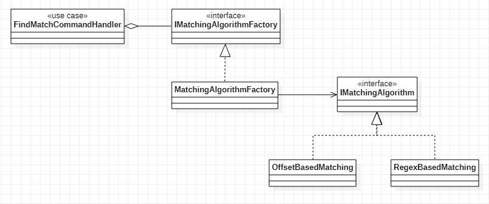

The code for the backend can be cloned or downloaded in this repository.
The frontend application can be downloaded here.
The architectural implementation employed is called Vertical Slice Architecture. This architecture was introduced by Jimmy Boggard, who is also the creator of MediatR and the very popular AutoMapper. VSA itself was derived from Bob Martin's Clean Architecture. The primary difference is that VSA strongly prescribes a single assembly for the entire project as opposed to the more commonly industry-practiced multi-tiered assemblies typical with N-tier architectures, where Clean Architecture is not opinionated on the number of assemblies. VSA also prioritizes code maintainability and flexibility over code re-use. VSA and Clean Architecture are both Use-Case driven architectures.
Backend
Frontend
Others
Factory + Strategy Pattern
Unit testing is BDD (Behavioral Driven Design) as opposed to testing by implementation.
The naming convention for test cases follow the pattern <UseCase>_<BusinessRule>.
[NOTE*: The docker script provided is intended for Heroku. If you need your container to run locally you will need to change EXPOSE ${PORT} to EXPOSE 80 (or any local port available)]